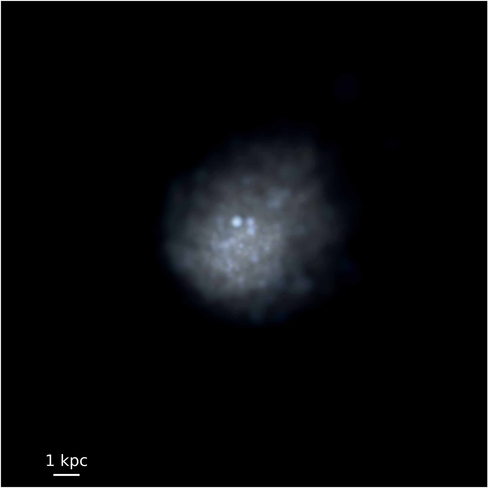
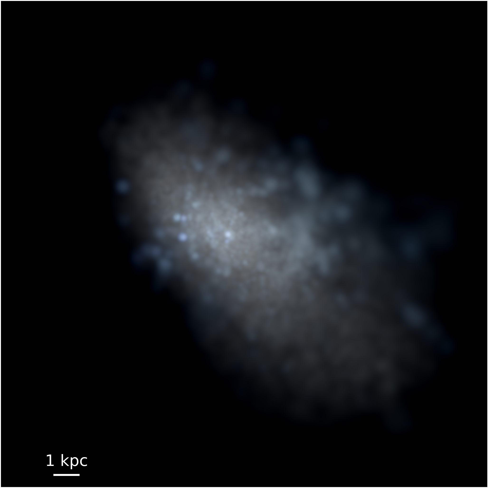
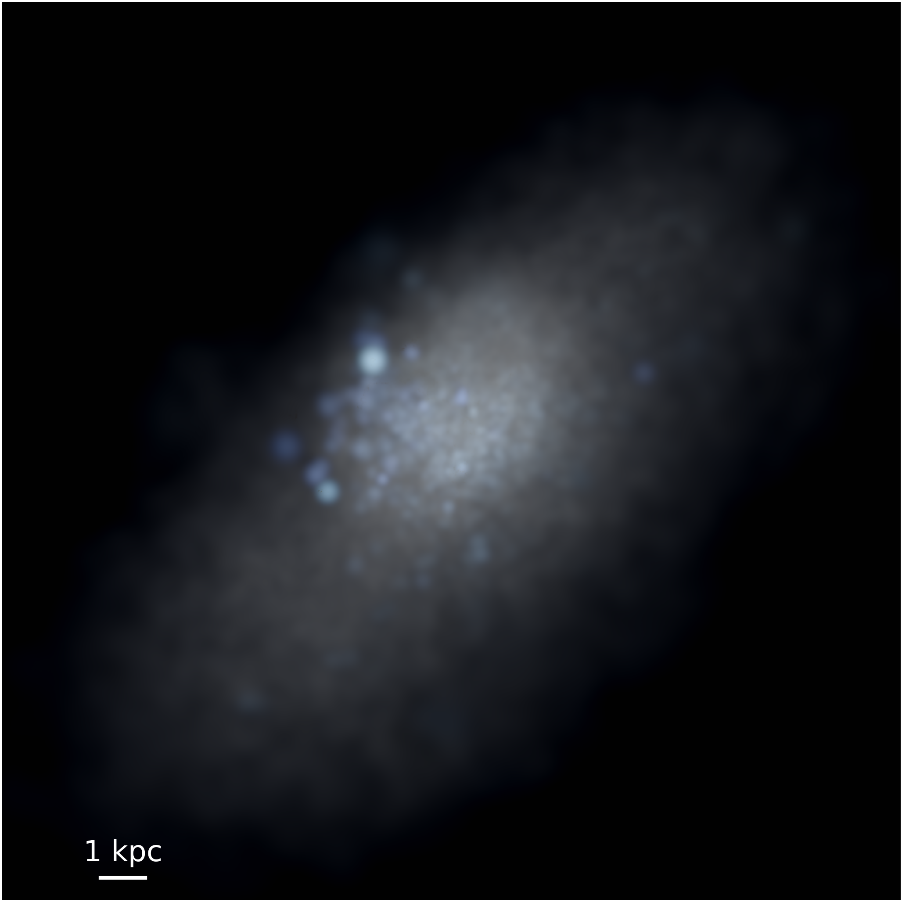

Andrew Graus
Harlan J. Smith Fellow
University of Texas at Austin

Harlan J. Smith Fellow
University of Texas at Austin
I study theoretical galaxy formation, with an emphasis on the smallest galaxies we can see. Below are some of my research interests
One of my current active areas of research is simulating dwarf galaxies of the Local Volume as part of the FIRE collaboration. The purpose of these types of simulations to better understand the complex physics that shapes the formation of galaxies including stellar feedback, and reionization.
Below are visualizations of three simulations that I've run with GIZMO. Each of these galaxies has a stellar mass around 1 × 108 M☉, which is roughly the mass of the Small Magellanic Cloud (SMC).
  Another active area of research for me is studying the dwarf satellites of the Milky Way (and Andromeda). By studying the distribution and kinematics of the satellites of the Milky Way we can learn a great deal about how the Milky Way influences these small structures, and which processes dominate the formation of galaxies.
Related to the Milky Way satellites is the process of the disruption of satellites due to the stellar disk of the Milky Way. This is illustrated by the figure below ( adapted from Kelley et al. 2019 ). On the left is the satellite distribution of a Milky Way like galaxy without the presence of a disk, on the right the disk is added in. The addition of the disk reduces the number of satelltes by up to 50 %. I have used simulations of disk disruption to place constraints on the the smallest galaxies that can form. You can read this work here .
Another area of resarch is making theoretical predictions of the field of substructure lensing. We can use observations of lensing galaxies, and complex models to potentially reveal very small substructures, potentially even dark matter halos that have no corresponding galaxy. This is interesting because it could potentially allow us to study the properites of dark matter.